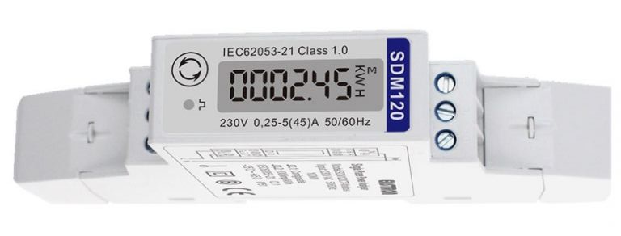
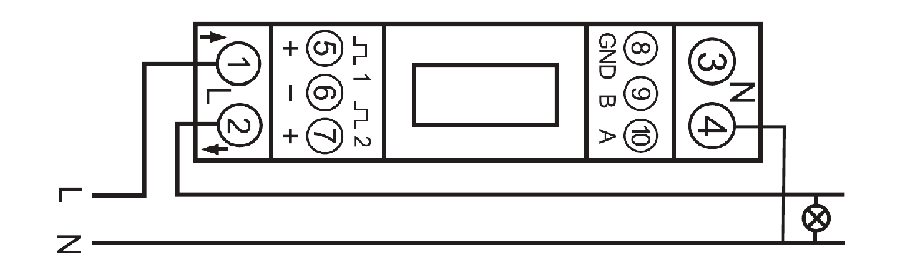
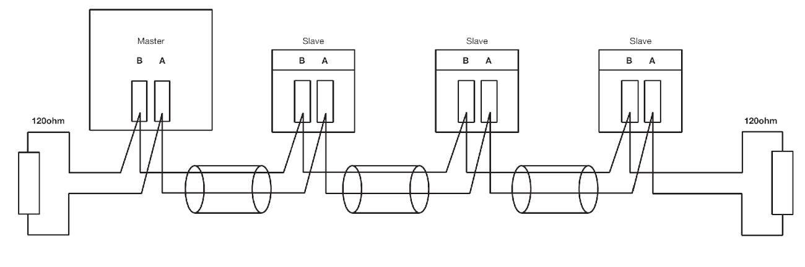
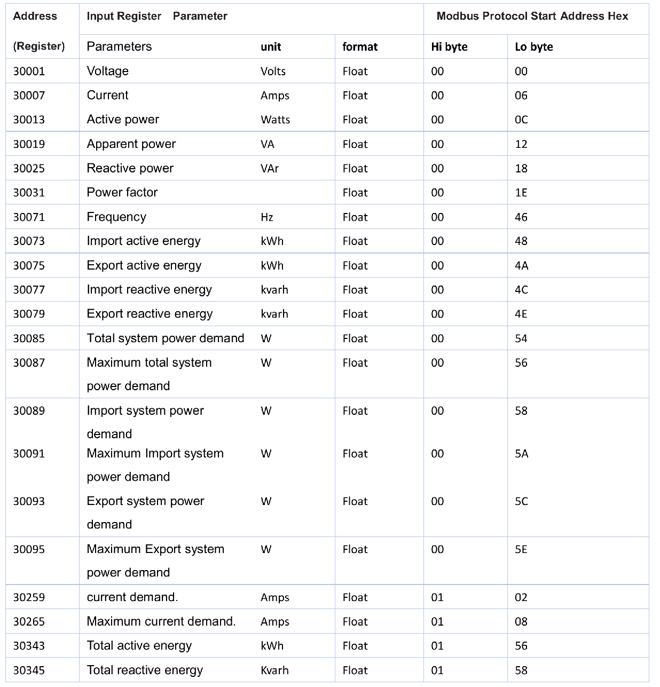
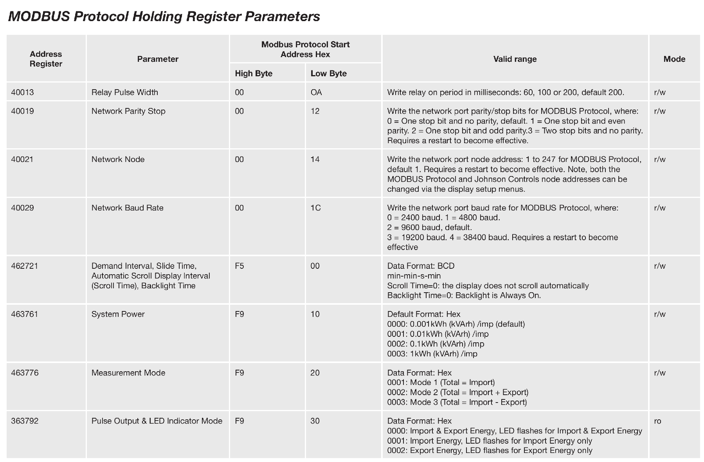
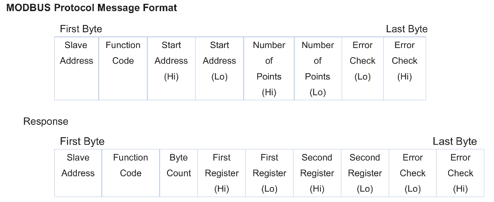

การอ่านค่าจากเพาเวอร์มิเตอร์ไฟฟ้าเฟสเดียว: SDM120#
บทความนี้กล่าวถึง การทดลองอ่านค่าจากเพาเวอร์มิเตอร์เฟสเดียว รุ่น SDM120 โดยเชื่อมต่อผ่านบัส RS485 และใช้โฟรโตคอล Modbus RTU
Keywords: Single-Phase Power Meter, RS485, Modbus RTU, Python
▷ เพาเวอร์มิเตอร์แบบดิจิทัล#
มิเตอร์วัดกำลังไฟฟ้า หรือ "เพาเวอร์มิเตอร์" แบบดิจิทัล (Digital Power Meter) เป็นอุปกรณ์ที่ใช้สำหรับการวัดค่าหรือพารามิเตอร์ต่าง ๆ สำหรับไฟฟ้ากระแสสลับ เช่น
- ความถี่ (Hz)
- แรงดันไฟฟ้า (V)
- กระแสไฟฟ้า (I)
- ค่าเพาเวอร์แฟคเตอร์ หรือ ค่าตัวประกอบกำลังไฟฟ้า (Power Factor)
- กำลังไฟฟ้าที่ใช้งานจริง (Real Power: kW)
- กำลังไฟฟ้าที่ปรากฏ (Apparent Power: kVA)
- กำลังไฟฟ้ารีแอคทีฟ (Reactive Power: kVAR)
- พลังงานไฟฟ้าที่ใช้ (Energy: kWh)
มิเตอร์ไฟฟ้าประเภทนี้ จำแนกได้ตามจำนวนเฟสไฟฟ้าที่ต้องการวัดทางไฟฟ้า ได้แก่ มิเตอร์แบบเฟสเดียว (Single-Phase Power Meter) และมิเตอร์แบบสามเฟส (3-Phase Power Meter) นอกจากมีหน้าจอแสดงผลแบบ LCD มิเตอร์ไฟฟ้าแบบดิจิทัลในยุคปัจจุบัน ยังรองรับการเชื่อมต่อด้วยโพรโทคอล Modbus RTU และเชื่อมต่อกับระบบบัส RS485 ได้ด้วย
การต่อวงจรไฟฟ้าเพื่อใช้งานมิเตอร์ มีหลายรูปแบบ โดยดูจากความจำเป็นที่ต้องใช้อุปกรณ์อื่นร่วมด้วยหรือไม่ เช่น การใช้หม้อแปลงแรงดันไฟฟ้า (Potential Transformer: PT) และหม้อแปลงกระแสไฟฟ้า (Current Transformer: CT) เพื่อการลดทอนแรงดันไฟฟ้าด้วย PT หรือลดกระแสไฟฟ้าด้วย CT ให้มีค่าต่ำลงและอยู่ในช่วงเหมาะสมกับมิเตอร์ไฟฟ้า
▷ มิเตอร์เฟสเดียว: SDM120(M)#
ข้อมูลเชิงเทคนิคเกี่ยวกับมิเตอร์ไฟฟ้ารุ่น SDM120-MODBUS (แบรนด์สินค้า Eastron)
- เป็นมิเตอร์ไฟฟ้าดิจิทัลแบบเฟสเดียว Single-Phase Digital Power Meter
- เชื่อมต่อด้วยสาย L (Line) และ N (Neutral)
- วัดกระแสไฟฟ้าโดยตรง (direct connected) ไม่ได้ใช้หม้อแปลงสำหรับวัดกระแส (Current Transformer: CT)
- คลาสความแม่นยำสำหรับการวัดแรงดันและกระแสไฟฟ้า: 0.5
- รองรับแรงดันอินพุต: 176 ~ 276V AC
- รองรับกระแสไฟฟ้า: 0.25A ~ 5A (45A max.)
- วัดค่าพลังงาน (kWh) และกำลังไฟฟ้า (kW) ได้ทั้งสองทิศทาง (Bi-directional measurment)
- อ่านข้อมูลได้ผ่านบัส RS485 ร่วมกับโพรโทคอล Modbus RTU
- ค่า Baudrate: 9600 (default)
- ตั้งค่าหมายเลขอุปกรณ์ (Device Address) ได้ในช่วง 1 ~ 247
- ให้เอาต์พุตเป็นแบบพัลส์ (Pulsed Outputs)
- ผ่านมาตรฐาน MID (Measuring Instruments Directive, B and D)
- สามารถติดตั้งบนรางปีกนกได้ (DIN Rail Mounting)

รูป: SDM120

รูป: การเชื่อมต่อกับมิเตอร์ (Wiring Diagram)
การต่อสายไฟจาก L และ N ไปยังมิเตอร์และโหลดไฟฟ้า
- 1: สาย L (Line-In) เพื่อให้กระแสวิ่งเข้าไปในตัวมิเตอร์
- 2 สาย L (Line-Out) เพื่อให้กระแสวิ่งออกจากตัวมิเตอร์ไปยังโหลดไฟฟ้า
- 3, 4: สาย N (Neutral)
- 5, 6, 7: เป็นเอาต์พุตแบบพัลส์ Pulse Out 1 (Export kWh), GND, Pulse Out 2 (Import kWh)
- 8, 9, 10: GND ของวงจร สัญญาณ B และ A ตามลำดับ

รูป: ตัวอย่างการต่อมิเตอร์หลายตัวในระบบบัส RS485 และมีตัวต้านทาน 120 โอห์ม ปิดปลายทั้งสองด้าน
ไฟล์เอกสารสำหรับการใช้งานมิเตอร์
ตามโพรโทคอลของ Modbus RTU การเขียนหรืออ่านข้อมูลรีจิสเตอร์ แต่ละตัวมีขนาด 2 ไบต์ หรือ 16 บิต ( Big-endian encoding) มีการจำแนกประเภทหรือแบ่งกลุ่มซึ่งจะใช้ คำสั่ง Function Code (FC) แตกต่างกัน เช่น
- Input Registers เป็นรีจิสเตอร์สำหรับข้อมูล (ขนาด 2 ไบต์) ที่ใช้เป็นอินพุตของโมดูลหรือมีการเปลี่ยนแปลงได้
- ใช้คำสั่ง FC = 0x04 (Read Input Registers) อ่านค่าจากรีจิสเตอร์หนึ่งตัว (หรือมากกว่าหนึ่งตัวแต่มีแอดเดรสต่อเนื่องกัน)
- Holding Registers เป็นรีจิสเตอร์สำหรับข้อมูล (ขนาด 2 ไบต์) เช่น การตั้งค่าการใช้งานสำหรับโมดูล
- ใช้คำสั่ง FC = 0x03 (Read Multiple Holding Registers) อ่านค่าจากรีจิสเตอร์หนึ่งตัว (หรือมากกว่าหนึ่งตัวแต่มีแอดเดรสต่อเนื่องกัน)
- ใช้คำสั่ง FC = 0x06 (Write Single Holding Register) เขียนค่ารีจิสเตอร์หนึ่งตัว
- ใช้คำสั่ง FC = 0x10 (Write Multiple Holding Registers) เขียนค่ารีจิสเตอร์มากกว่าหนึ่งตัว
รีจิสเตอร์ภายในมิเตอร์ SDM120 แบ่งเป็น 2 กลุ่มคือ
- รีจิสเตอร์อินพุตของมิเตอร์ (Modbus Input Registers) ดังนั้นจึงใช้ Function Code เท่ากับ 0x04 ในการอ่านค่า
- รีจิสเตอร์สำหรับการตั้งค่าของมิเตอร์ (Modbus Holding Registers) ดังนั้นจึงใช้ Function Code เท่ากับ 0x03 ในการอ่านค่า

รูป: แอดเดรสของรีจิสเตอร์อินพุตของมิเตอร์ (Modbus Input Registers)
จากตารางจะเห็นได้ว่ามีการระบุแอดเดรสในช่วง 30001 ~ 30345 สำหรับรีจิสเตอร์อินพุตแต่ละตัว
ให้ดูที่แอดเดรสเริ่มต้น (Start Address Hex) ซึ่งเป็นเลขฐานสิบหก
และใช้ Function Code = 0x03 สำหรับการอ่านค่า
0x0000 - 0x0001หมายถึง รีจิสเตอร์ 2 ตัว (32 บิต) สำหรับแรงดันไฟฟ้า0x0006 - 0x0007หมายถึง รีจิสเตอร์ 2 ตัว (32 บิต) สำหรับกระแสไฟฟ้า0x000C - 0x000Dหมายถึง รีจิสเตอร์ 2 ตัว (32 บิต) สำหรับกำลังไฟฟ้าที่ใช้จริง

รูป: แอดเดรสของรีจิสเตอร์สำหรับการตั้งค่าของมิเตอร์ (Modbus Holding Registers)
จากตารางสำหรับรีจิสเตอร์เพื่อการตั้งค่าใช้งาน และใช้ Function Code = 0x4 สำหรับการอ่านค่า
0x0014~0x0015หมายถึง รีจิสเตอร์ 2 ตัว (32 บิต) สำหรับหมายเลขอุปกรณ์ (Device Address)0x001C~0x001Dหมายถึง รีจิสเตอร์ 2 ตัว (32 บิต) สำหรับค่า Baudrate (0=2400, 1=4800, 2=9600, ...)
ถ้าต้องการอ่านค่าจากรีจิสเตอร์ เพื่อให้ได้ค่า float (32 บิต)
จะต้องส่งเฟรมข้อมูล (Request Frame) ไปยังมิเตอร์ โดยมีลำดับข้อมูลไบต์ดังนี้
- Slave Address: แอดเดรสของมิเตอร์ (1 ไบต์)
- Function Code: โค้ดของฟังก์ชัน (1 ไบต์) เช่น 0x03 หรือ 0x04
- Start Address (High Byte): แอดเดรสเริ่มต้นของรีจิสเตอร์ที่ต้องการอ่านค่า (ไบต์สูง)
- Start Address (Low Byte): แอดเดรสเริ่มต้นของรีจิสเตอร์ที่ต้องการอ่านค่า (ไบต์ต่ำ)
- Number of Registers (High Byte): จำนวนรีจิสเตอร์ที่ต้องการอ่าน (ไบต์สูง)
- Number of Registers (Low Byte): จำนวนรีจิสเตอร์ที่ต้องการอ่าน (ไบต์ต่ำ)
- CRC16 (Low Byte): ค่าตัวเลขสำหรับ 16-bit CRC Checksum (ไบต์ต่ำ)
- CRC16 (High Byte): ค่าตัวเลขสำหรับ 16-bit CRC Checksum (ไบต์สูง)
เฟรมข้อมูลที่ได้รับการตอบกลับมา (Response Frame) หากทำคำสั่งได้ถูกต้อง (เช่น อ่านค่ารีจิเตอร์ 2 ตัว) มีลักษณะดังนี้
- Slave Address แอดเดรสของมิเตอร์ (1 ไบต์)
- Function Code: โค้ดของฟังก์ชัน (1 ไบต์) เช่น 0x03 หรือ 0x04
- Byte Count: จำนวนไบต์ของข้อมูลที่ตามมา
- First Register (High Byte): ค่าของรีจิสเตอร์ตัวแรก (ไบต์สูง)
- First Register (Low Byte): ค่าของรีจิสเตอร์ตัวแรก (ไบต์ต่ำ)
- Second Register (High Byte): ค่าของรีจิสเตอร์ตัวที่สอง (ไบต์สูง)
- Second Register (Low Byte): ค่าของรีจิสเตอร์ตัวที่สอง (ไบต์ต่ำ)
- CRC16 (Low Byte): ค่าตัวเลขสำหรับ 16-bit CRC Checksum (ไบต์ต่ำ)
- CRC16 (High Byte): ค่าตัวเลขสำหรับ 16-bit CRC Checksum (ไบต์สูง)

รูป: เฟรมข้อมูลสำหรับการส่งคำสั่งไปยังมิเตอร์และเฟรมข้อมูลที่ได้รับตอบกลับจากมิเตอร์ เมื่อต้องการอ่านค่าในรีจิสเตอร์
▷ ตัวอย่างโค้ด: Python#
โค้ดตัวอย่าง Python ต่อไปนี้สาธิตการอ่านค่าจากมิเตอร์ ตามแอดเดรสของรีจิสเตอร์ต่าง ๆ
โดยใช้ไลบรารี MinimalModbus
และคอมพิวเตอร์ของผู้ใช้จะต้องเชื่อมต่อ
โดยใช้อุปกรณ์ USB-to-RS485 จึงจะสามารถเชื่อมต่อกับบัส RS485 ไปยังมิเตอร์ไฟฟ้าได้
ในโค้ดจะต้องมีการระบุหมายเลขของมิเตอร์ (อยู่ในช่วง 1 ~ 247)
พอร์มอนุกรมสำหรับการสื่อสาร เช่น /dev/ttyUSB0 สำหรับ Linux
และค่า Baurate ให้ตรงกับการตั้งค่าของมิเตอร์ เช่น 9600
#!/usr/bin/python
import minimalmodbus
import time
# Set the device address
addr = 1
# Set the serial port
serial_port = '/dev/ttyUSB0'
rs485 = minimalmodbus.Instrument(serial_port, addr)
rs485.serial.baudrate = 9600
rs485.serial.bytesize = 8
rs485.serial.parity = minimalmodbus.serial.PARITY_NONE
rs485.serial.stopbits = 1
rs485.serial.timeout = 0.5
rs485.debug = False
rs485.mode = minimalmodbus.MODE_RTU
# Read float:
# registeraddress=??, functioncode=4, number_of_registers=2
Volt = rs485.read_float(0, 4, 2)
Current = rs485.read_float(6, 4, 2)
Active_Power = rs485.read_float(12, 4, 2)
Apparent_Power = rs485.read_float(18, 4, 2)
Reactive_Power = rs485.read_float(24, 4, 2)
Power_Factor = rs485.read_float(30, 4, 2)
Phase_Angle = rs485.read_float(36, 4, 2)
Frequency = rs485.read_float(70, 4, 2)
Import_Active_Energy = rs485.read_float( 72, 4, 2)
Export_Active_Energy = rs485.read_float( 74, 4, 2)
Import_Reactive_Energy = rs485.read_float( 76, 4, 2)
Export_Reactive_Energy = rs485.read_float( 78, 4, 2)
Total_Active_Energy = rs485.read_float(342, 4, 2)
Total_Reactive_Energy = rs485.read_float(344, 4, 2)
print( f'Voltage: {Volt:.1f} V' )
print( f'Current: {Current:.1f} A' )
print( f'Active power : {Active_Power:.1f} W' )
print( f'Apparent power: {Apparent_Power:.1f} VA' )
print( f'Reactive power: {Reactive_Power:.1f} VAr' )
print( f'Power factor : {Power_Factor:.1f}' )
print( f'Phase angle : {Phase_Angle:.1f} Degree' )
print( f'Frequency : {Frequency:.1f} Hz' )
print( f'Import active energy : {Import_Active_Energy:.3f} kWh' )
print( f'Export active energy : {Export_Active_Energy:.3f} kWh' )
print( f'Import reactive energy: {Import_Reactive_Energy:.3f} kVArh' )
print( f'Export reactive energy: {Export_Reactive_Energy:.3f} kVArh' )
print( f'Total active energy : {Total_Active_Energy:.3f} kWh' )
print( f'Total reactive energy : {Total_Reactive_Energy:.3f} kVARh' )
คำสั่งของ MinimalMobdus ที่ใช้ในการอ่านค่าจากริจีสเตอร์อินพุต คือ read_float(...) ซึ่งจะต้องระบุแอดเดรสของรีจิสเตอร์
ตามด้วยค่าสำหรับ Function Code เช่น 3 หรือ 4 จำนวนของรีจิสเตอร์ที่ต้องการอ่าน
(ถ้าเป็นข้อมูลตัวเลขแบบ float จะต้องอ่าน 2 ริจิสเตอร์ เพื่อให้ได้ 32 บิต) และลำดับของไบต์ข้อมูล
(ค่า default คือ 0 ซึ่งหมายถึง Big-endian)
read_float(
registeraddress: int,
functioncode: int = 3,
number_of_registers: int = 2,
byteorder: int = 0) → float
▷ กล่าวสรุป#
บทความนี้ได้นำเสนอการทดลองใช้งานเพาเวอร์มิเตอร์เฟสเดียว รุ่น SDM120 (Brand: Eastron) และตัวอย่างโค้ด Python เพื่อสาธิตการอ่านค่าจากมิเตอร์ โดยเชื่อมต่อผ่านบัส RS485 และใช้โพรโทคอล Modbus RTU เพื่อส่งเฟรมข้อมูลสำหรับคำสั่งและข้อมูลตอบกลับ
บทความที่เกี่ยวข้อง
- การใช้งานโมดูลสื่อสาร RS485 Transceiver
- การใช้งานโมดูล XY-MD02 Temperature & Humidity Sensor (RS485 Modbus RTU)
- การอ่านค่าจากเพาเวอร์มิเตอร์ไฟฟ้าสามเฟส: CJ-3D3YS (ZGCJ)
- การอ่านค่าจากเพาเวอร์มิเตอร์ไฟฟ้าสามเฟส: ZM194-D9Y (ZJZM)
This work is licensed under a Creative Commons Attribution-ShareAlike 4.0 International License.
Created: 2024-01-27 | Last Updated: 2024-01-27